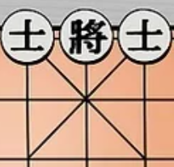
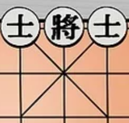

The General is the most important piece on the board. It is like a king, where once the king is dead,
you lose the game. Similarly, the aim of the goal is to take the enemy's general down. The General
moves one position at a time, horizontally or vertically, but is restricted to moving within The Palace.
Black General is represented using '将' and Red General '帅' or '帥'

The guards can only move diagonally one position at a time, but cannot leave The Palace. There are
two advisors, one on each side of the general.
Advisors are represented using '仕' for red and '士' for black
 

The Palace is a 3 x 3 box with a total of 9 positions inside.
As mentioned earlier, the general and two advisors cannot leave the palace.
The General starts in the center at the bottom of the board. The two generals cannot face each other,
i.e. no pieces in between both Generals
There are 5 pawns (also known as soldiers). They can move forward one position at a time. The pawn captures by moving
forward into a piece. But, as you’ll see in the section on The River, when the pawn crosses the river
in the center of the board, the pawn can then move and capture forward or sideways, one spot at a time.
Unlike international chess, the pawn does not get promoted to another piece when it reaches the last row.
The pawns are represented using '兵' and '卒'

The chariot (or car) is the most powerful piece. The chariot can move orthogonally as far as
there are open positions, and he captures an opponent piece by landing on it. Chinese Chess
does not have a queen, so it is important to keep this piece alive.
The chariot is represented using '车' or '車'
The horse moves similar (but not exactly) to a knight in international chess. The horse moves two positions
in one direction, then continues to one in another direction. If there is a piece in the horse’s path,
it cannot jump over the piece. It starts to become a more valuable piece in the endgame.
The horse is represented using '马' or '馬'
The elephant moves diagonally exactly two positions. There cannot be a piece blocking its movement.
The elephant cannot cross The River. The elephants are often used in conjunction to protect each other
and the general.
The elephant is represented using 象 for black and 相 for red
The cannon can move as many positions as are open horizontally or vertically. It is a powerful piece,
just slightly inferior to a chariot. It is unique as it must jump over a piece (the cannon mount)
along its path (a piece from either army) and then land on its victim to capture a piece.
The mount can be the enemies piece or your own pieces.
The cannon is represented using 炮
It divides the board in half, and strengthen soldiers to be able to move diagonally, and does not
allow the elephants to cross, or even pieces in The Palace.
Familiarize yourself with the lines on the board before placing your pieces on the board. Chinese chess pieces are
placed on line intersections, which are called points, instead of in the actual board squares.
Each piece has a designated place on the board, as in International chess. To play Chinese chess,
you need to make sure that your pieces are all in the correct place on the board.
On the row nearest you, place your pieces on the points from left to right:
the chariot, horse, elephant, guard, king, guard, elephant, knight, and chariot.
On the third row,
place your two cannons on the intersection that is one space from the edge of the right and left side of the board.
On the fourth row,
place your soldier pieces on every other intersection, beginning with the first intersection on the edge of the board.